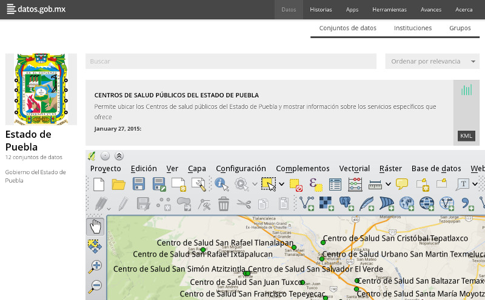

El pasado 19 y 20 de febrero se desarrolló en la Ciudad de México el Seminario sobre Innovación Pública a cargo de MX Abierto.
El seminario permitió compartir experiencias nacionales e internacionales sobre innovación en el sector público, nuevas metodologías para generar soluciones innovadoras a problemas tradicionales de la administración pública, así como para la publicación y uso de datos abiertos del gobierno.
Entre los ponentes hubo representantes del gobierno del estado de Puebla y del municipio de Xalapa, Veracruz; los cuales compartieron sus experiencias en materia de datos abiertos. A continuación, un breve resumen de las mismas.
Puebla: La colaboración como clave para la apertura
En el caso de Puebla, la experiencia en la apertura de datos públicos ha tenido éxito gracias a la colaboración entre distintos actores. A partir de un diagnóstico, se identificaron las acciones para lograr la apertura y liberación de datos. Por otra parte, trabajaron en una nueva regulación para organizar, catalogar y publicar los datos, además de que atendieran a la demanda o interés ciudadano.
La Coordinación de Transparencia comenzó a trabajar de la mano con la Coordinación de Contraloría Social y Gobierno Abierto, la cual se reestructuró para crear la Dirección de Gobierno Abierto. Fue así que nació el concepto “Puebla @bierta”, como una Política de Datos Abiertos transversal, alineada a una Política Estatal de Gobierno Abierto con el objetivo de fomentar la colaboración entre gobierno y sociedad a partir de la reutilización de información pública para la innovación cívica.
En coalición con la Coordinación de Estrategia Digital Nacional de la oficina de la Presidencia de la República, Puebla se convirtió en uno de los primeros gobiernos estatales en ser parte de la Red México Abierto, al compartir doce bases de datos en el catálogo nacional de datos abiertos.
Durante la primera etapa del diseño, se contempló una inversión para la adquisición de un sistema que permitiera gestionar los conjuntos de datos que se pretendían publicar. Sin embargo, gracias a la experiencia compartida por Presidencia, el costo del mismo se redujo casi a cero.
A futuro, como parte de la Política Estatal de Gobierno Abierto, se iniciarán acciones de capacitación para estandarizar el conocimiento, construir un lenguaje común y fortalecer las actividades del quehacer gubernamental en el tema de Datos Abiertos.

Xalapa, Veracruz, primer municipio con datos abiertos
Este municipio se dio a la tarea de iniciar el proceso llamado “Xalapa Abierta”, rumbo a una Política de Datos Abiertos y Gobierno Abierto. El primer paso fue realizar un censo de datos y bases prioritarias.
Se realizaron dos alianzas:
- Con la Coordinación de Estrategia Digital Nacional, apoyándose en su Escuadrón de Datos se lograron abrir 8 conjuntos de datos; el equipo brindó asesoría y acompañamiento técnico para la “curación” y posterior publicación de los conjuntos de datos en datos.gob.mx.
- Con la Universidad Veracruzana, a través de la Facultad de Informática y Estadística. Esta resultó fundamental para la creación del Comité Técnico Municipal para la liberación de los datos. Maestros y alumnos de dicha facultad se involucraron en el proyecto.
Una vez publicados los primeros conjuntos de datos, se realizó el Hackatón Xalapa 2014. Este proyecto fue trabajado con meses de anticipación con el fin de dar a conocer los ocho conjuntos de datos publicados y a su vez, demostrar que se pueden aprovechar para generar valor e incidir en la mejora de la calidad de vida de Xalapa. Asistieron 400 personas a las conferencias, de las cuales 150 estuvieron las 70 horas que duró el Hackatón.
Como área de oportunidad, se identificó que debido a la novedad del tema, los participantes del Hackatón no contaban aún con la experiencia, ni ciertas habilidades necesarias para el mejor aprovechamiento y reutilización de los datos. Por esto, se ha considerado que a la par de próximas aperturas se deben de impartir cursos y talleres proporcionen herramientas, estrategias y mejores prácticas para la reutilización de los Datos Abiertos para el personal de gobierno y sobretodo ciudadanos en general.
Los Datos Abiertos son exitosos siempre y cuando logren reducir la brecha de información que existe entre ciudadanos y gobernantes.